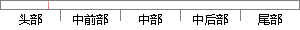

CSS为文档提供丰富的外观，以及设置背景、字体等属性的能力；
片段位置图

相似结果|
相似片段 1：的文档样式外观，以及设置文本和背景属性的能力，使用 CSS 可以为任何元素创建边框、设置边框与其他元素间的距离，以及元素边框与元素内容间的距离；还可以随意改变文本的大小写方式、修饰方式以及其他页面效果。易于使用和修改。
相似片段 2：格式和能力的移动设备所显示，CSS对于移动浏览器而言是严格的。CSS的能力在于控制对文档发生器的建议的精确度，以及文档发生器根据建议产生适合任何设备显示内容的简易性。文档的每个外观特征 (如位置、字体、文本属性、边界等)都可以在样式表中定义。
|
※ 片段修改建议 ※
近似词参考：- 提供：供给 供应
- 丰富：丰硕 富厚 厚实 雄厚 丰厚
- 外观：表面
- 以及：和
- 背景：布景 后台 靠山 配景
- 能力：本领
系统自动生成语句：CSS为文档供给丰硕的表面，和设置布景、字体等属性的本领；
注：本片段修改建议为系统自动生成，仅供参考。